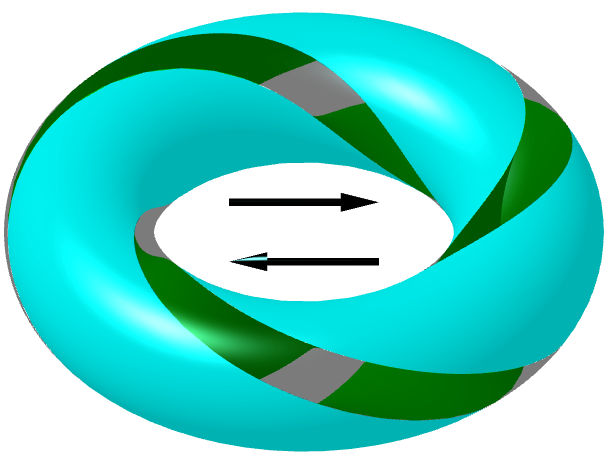

Unïnfo - The Theory of Universal Information
"Unïnfo" is pronounced "uni-info" /ˈjuːnɪˌɪnfə/, just like "naïve" /naɪˈiːv/.
Contents:
The metaphysical theory of Unïnfo
The Trinion (\(\Trinion\))
: Circle, Arrow, Equal, the three basic components and three basic postulates
The CIE (Ψ)
: Content - Intent - Extent and three partitions
Unithread Theory
The CIE (Ψ) in Unithread
: From thread to current
Projective Dynamics
: The dynamics generated by the distorted views resulting from projection between them
Elementary Operations
: Traversal, Plimus, Interunion, ToP
Knowledge Theory
Uninet